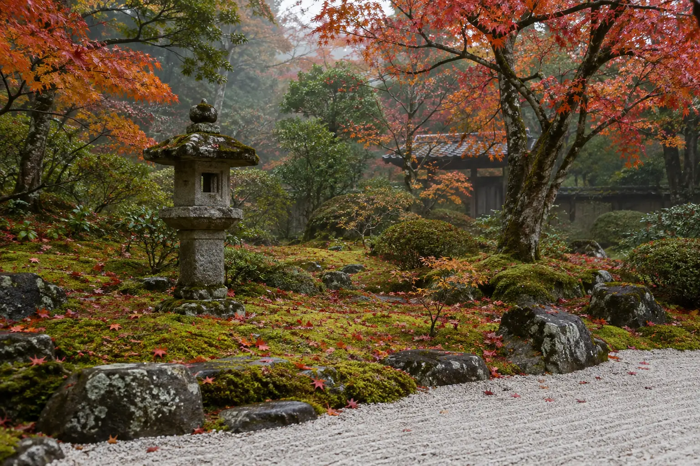
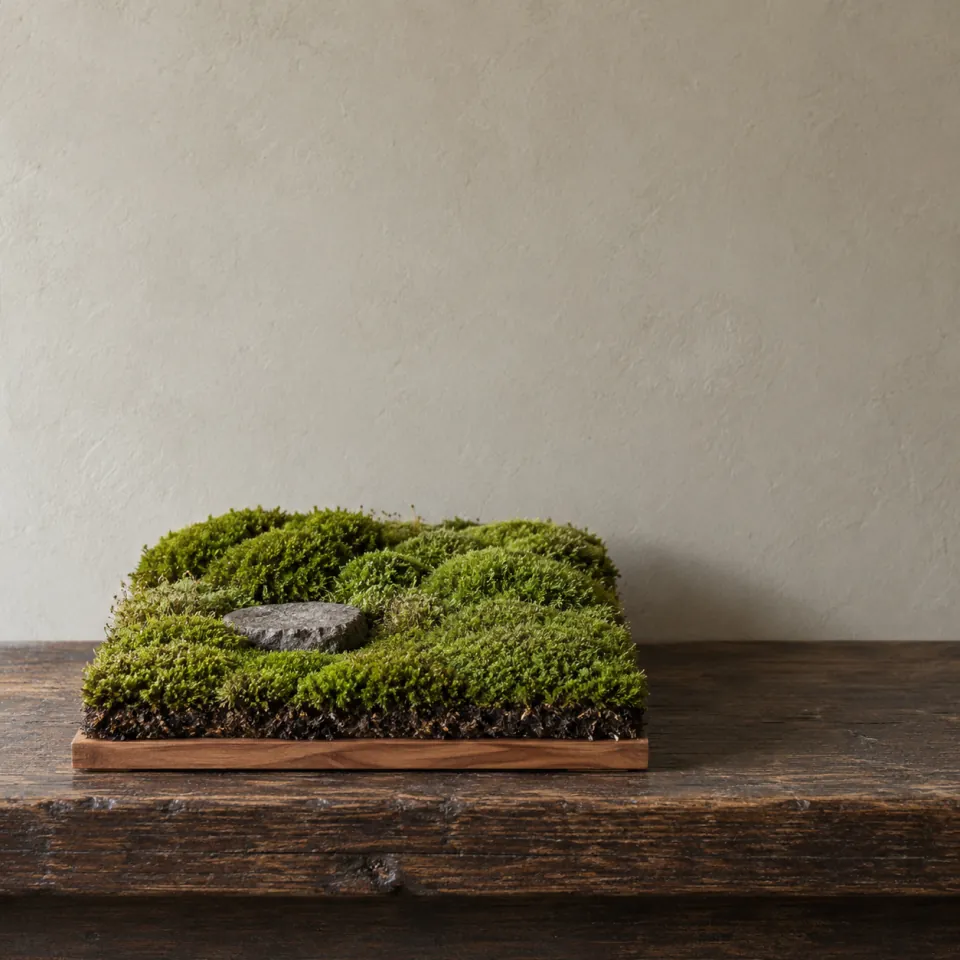
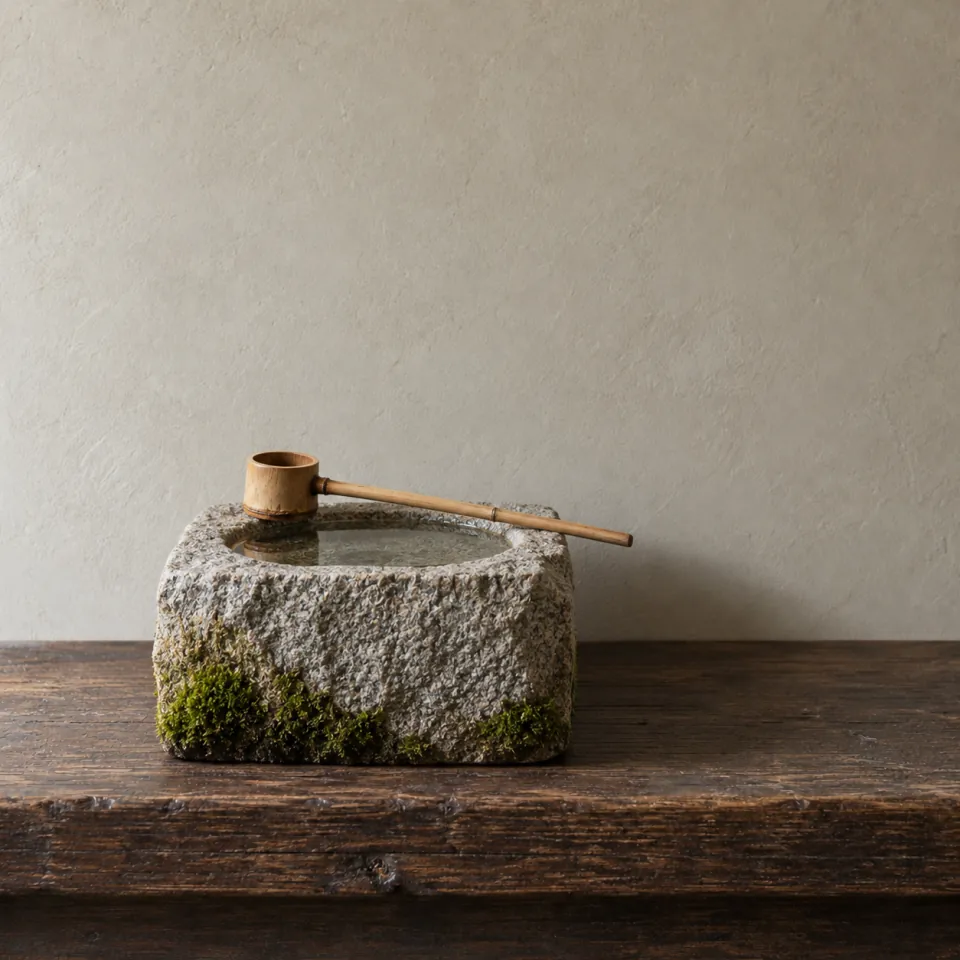
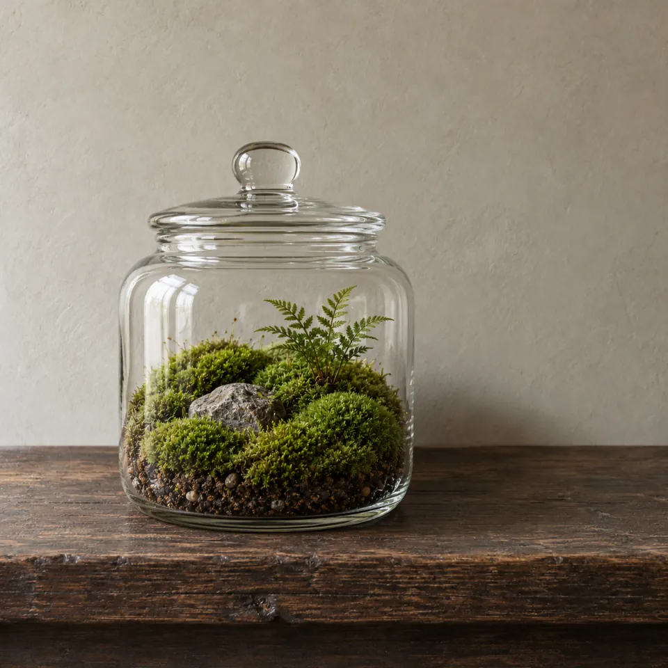
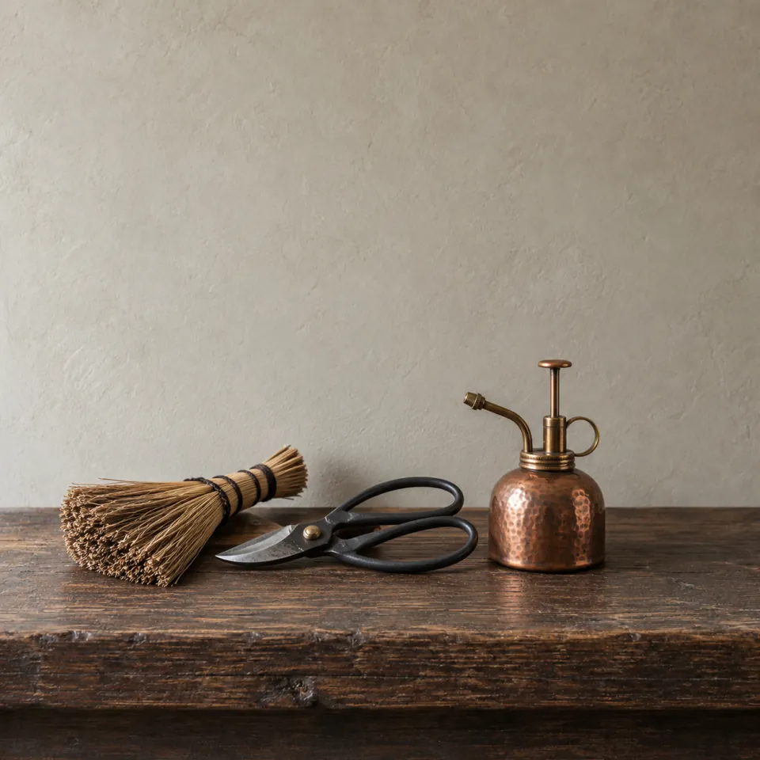
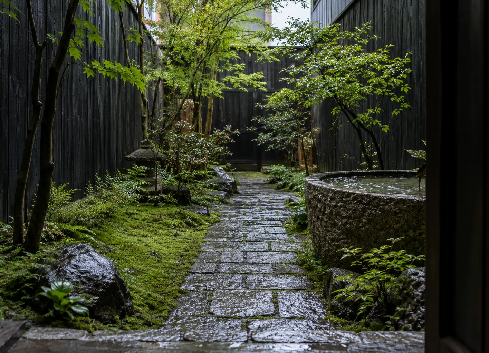
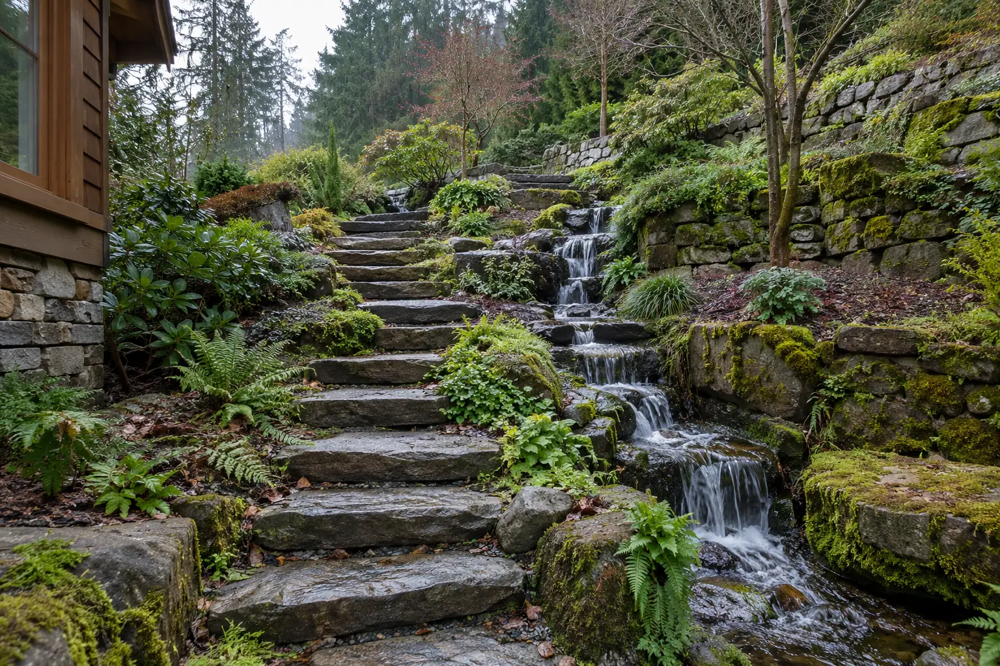
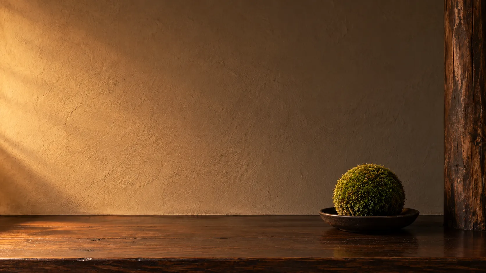

The Maple Garden
A garden we tend four times a year. In autumn the maples drop their leaves onto the moss and we leave them for a week before clearing.
Concept projectSeason now
Cold Dew
8 to 22 October
We design, plant and tend moss gardens, courtyards and terrariums, then care for them through every season.
Spring. New growth. We re-seat any moss the frost lifted.Summer. We mist in the evenings and keep the water clear.Autumn. Fallen leaves stay on the moss for a week before we clear them.Winter. We leave it be. Frost does moss no harm.
Moss is patient. It thrives in shade, holds water through dry weeks and needs no mowing. We design around what your ground already gives, so the garden settles in rather than fights back.
Tell us about your spaceWe watch how shade moves across your ground through the day before drawing a single line.
Local stone, chosen by hand and set so it looks like it was always there.
Cushion, sheet and haircap mosses matched to your soil, grown at our nursery.
A basin, a runnel or just a damp hollow, so the garden has something to listen to.
From a single glass vessel to a hillside, the work is the same: stone, moss, water and time.

New gardens and quiet renovations of tired ones, from front yards to temple-style hillsides.

Light wells, city courtyards and balconies turned into places you want to sit.

Living landscapes under glass for desks, lobbies and restaurants, planted to last for years.

Four visits a year to feed, trim and re-seat moss, and to keep water clear and stone clean.
Four steps, about a year from first walk to settled moss.
We walk your space with you, listen to how you want to use it and read the light, soil and water.
Drawings and a planting plan in a week or two. You approve every stone before anything moves.
A small crew builds it by hand over a few days, with little noise and less mess.
Moss takes a year to settle. We come back each season until it does, and after if you like.
A few recent gardens, seen the way a temple frames its view. Every project here is a fictional concept made for this demo.

A garden we tend four times a year. In autumn the maples drop their leaves onto the moss and we leave them for a week before clearing.
Concept project
A dark timber light well turned into a moss floor with a path of old granite setts and a basin that catches the rain.
Concept project
A steep bank behind a family home, rebuilt as dry-stone terraces with a stream that steps down beside the path.
Concept project
Tell us about your space, its light and how you'd like to use it. We'll reply within a few days.
hello@kokeandstone.example